ACTUAL IMPLEMENTED CAPTURES · 20 OCTOBER 2026 · AWAITING REVIEW
Leg length, clearance and clearer landings
A continuous length slider replaces the presets. Character colours and existing customisation remain available. The environment now respects standing height, with reachable individual boxes and a matching clothesline frame.
Rules, exact changes and recovery · 633 tests passed · Release build · Rollback verification
Your graphics example
Left: before. Right: after. Drag to compare the same camera. Warm timber surfaces, clearer top edges, board seams and contact shading make the stacked boxes easier to read. The existing lighting and cartoon palette are retained.
Leg length slider
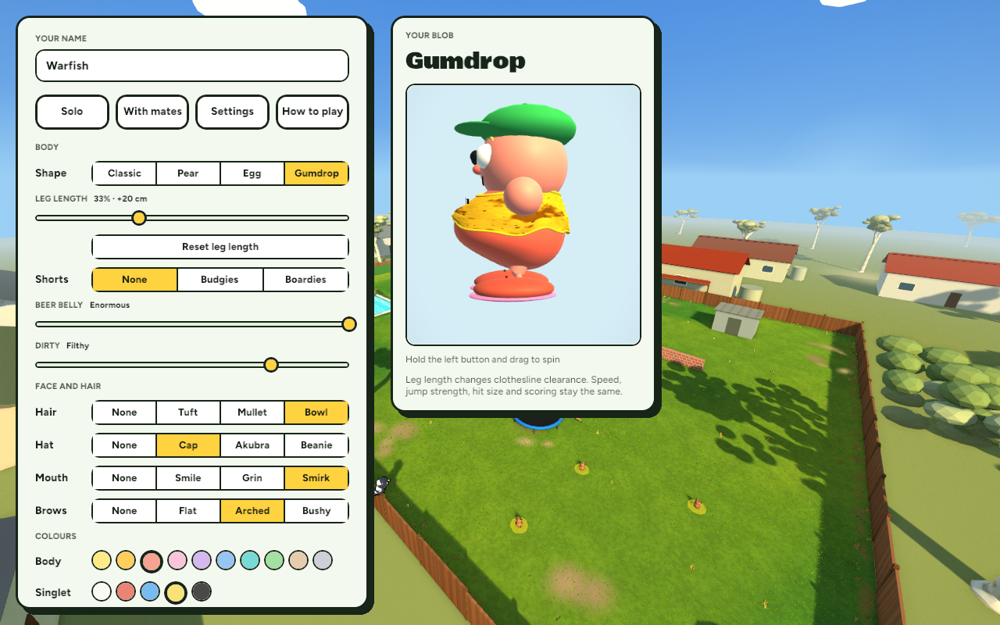
Saved preset migrated to its equivalent length; the reset button restores the original zero-length default.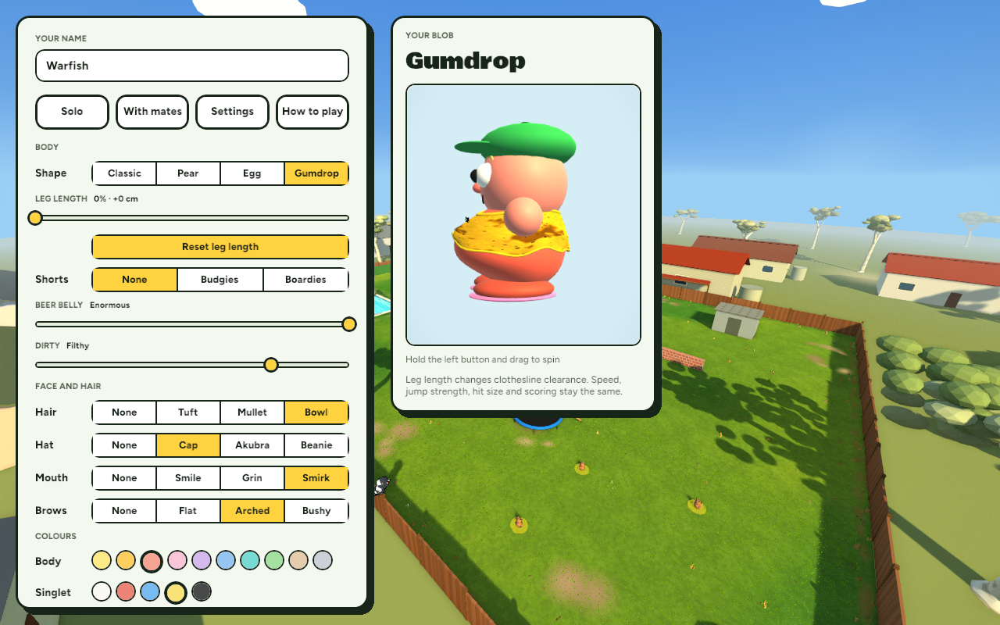
0% · default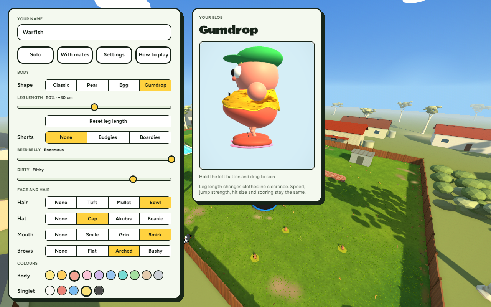
50% · +30 cm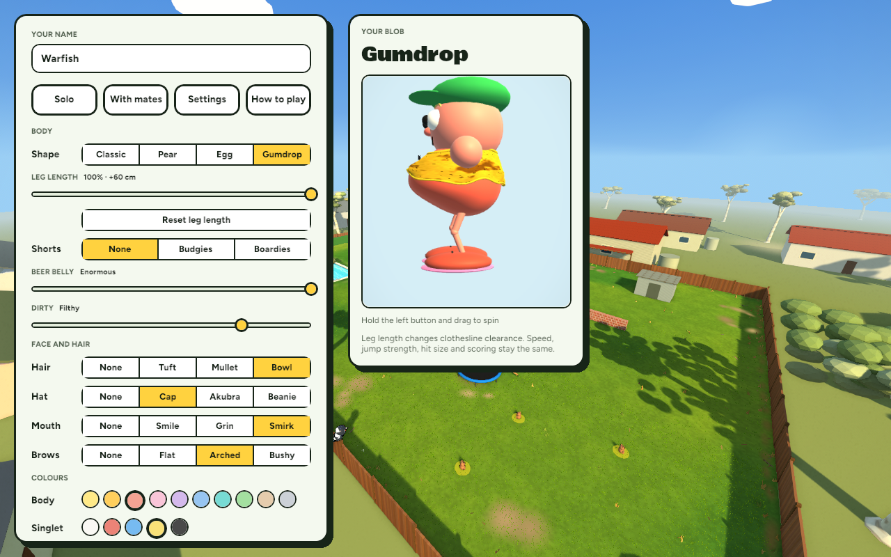
100% · +60 cmClimb the stack
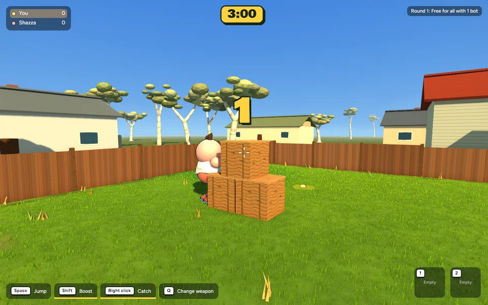
Actual game simulation with scripted movement input: jump to a lower box, jump to the upper box and stand on it. No teleport to the landing surfaces; existing jump velocity and gravity.Clothesline clearance
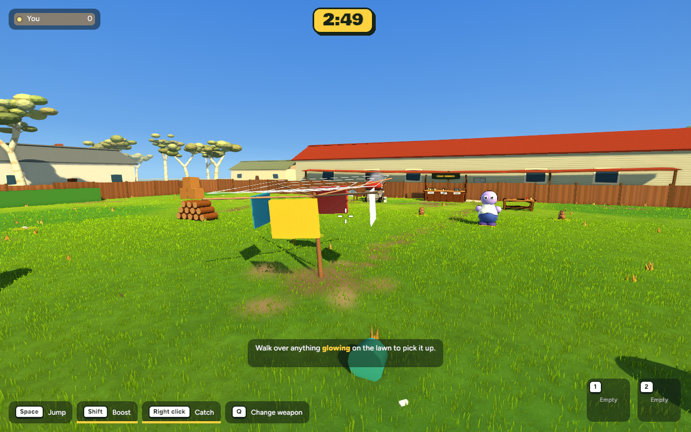
Before: spinning frame with only a pole collider.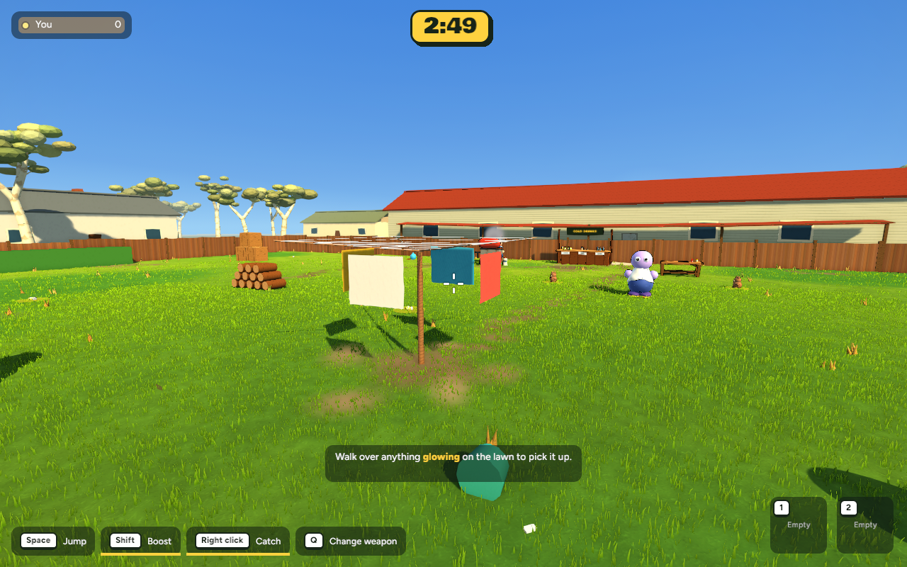
After: stationary frame whose arms and cords share geometry with collision. Fabric remains non-solid. Short avatars fit; taller heads are blocked where they meet the structure.Multiplayer
 Local host, zero-length legs.
Local host, zero-length legs.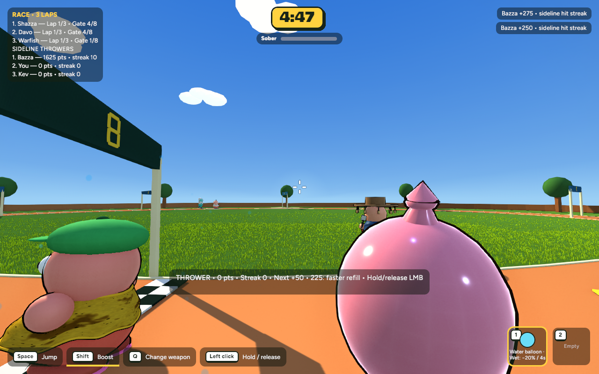
Connected guest, maximum leg length. Actual relay connection and guest throw.Protocol 12 requires matching builds. The host derives clearance from the validated appearance. Local host/guest verification and codec tests are included; WAN latency and packet-loss testing were not performed.
Performance
| Scene | Before | After | Frame time | Retained images |
|---|
| boxes | 7.654 ms / 130.65 FPS | 7.367 ms / 135.75 FPS | -3.7% | 35.8 MB |
| hoist | 8.246 ms / 121.27 FPS | 8.021 ms / 124.68 FPS | -2.7% | 38.9 MB |
Same scene, camera and 1280×800 resolution; 600 wall-clock intervals after warmup. No compiler running. These are desktop timing samples, not GPU timestamps.
Existing modes
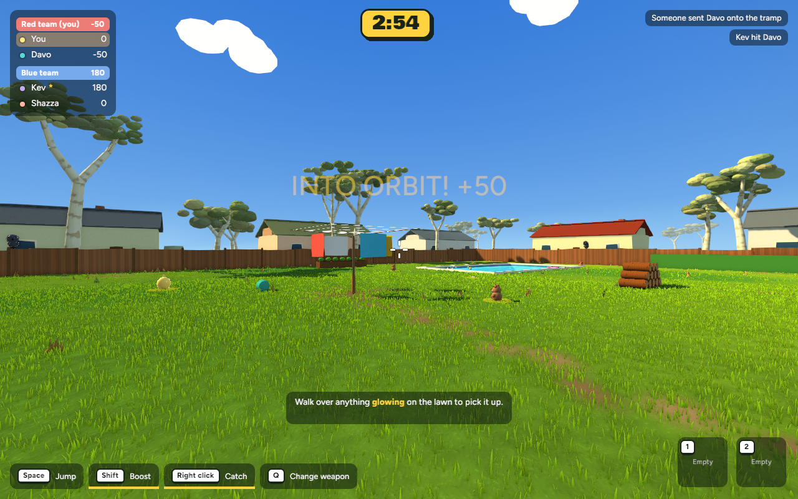
Teams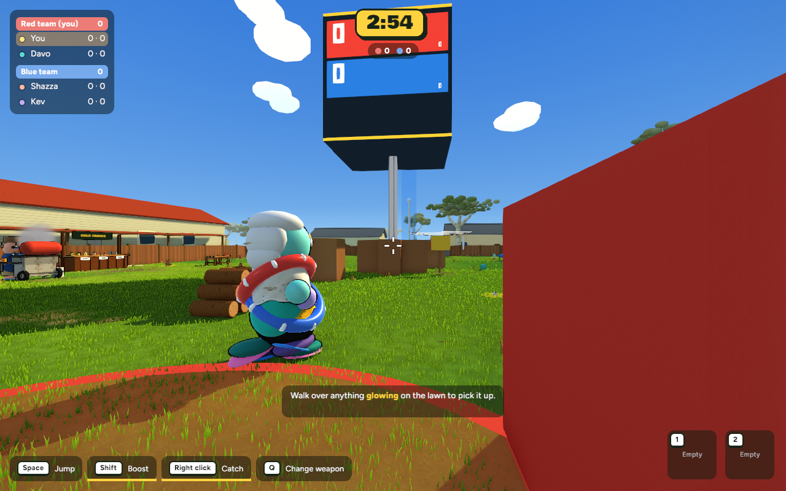
Heist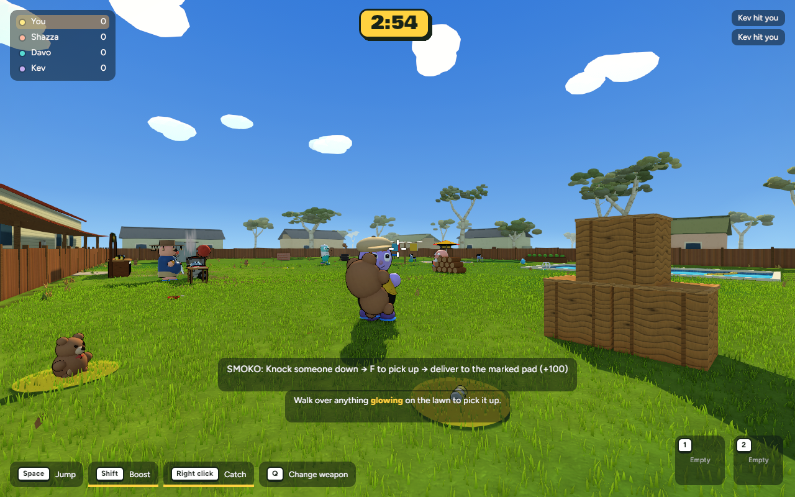
Smoko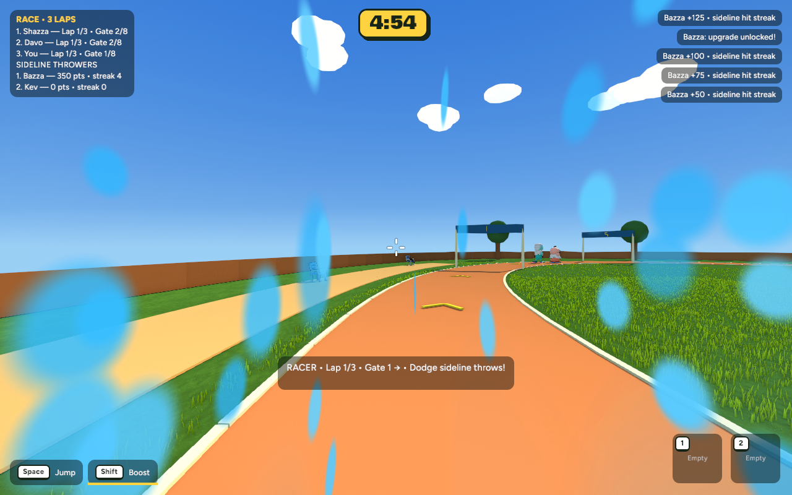
RaceTest
cd /Users/marcus/Claude/australian-bbq/rust
~/.cargo/bin/cargo run -p bbq_app --release -- --menu
Open character customisation and adjust Leg length. Full pre-edit backup: /Users/marcus/Claude/australian-bbq-backup-2026-10-19-211233. Nothing committed or pushed.